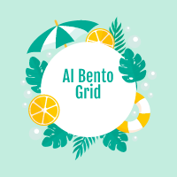

AI Bento Grid 
Home
Services
Documentation
About Us
Sign up
Log in
Welcome to AI Bento Grid where learning about AI is interesting and challenging.
ChatGPT is an AI language model developed by OpenAI, designed to understand and generate human-like text based on user input.
Gemini is Google DeepMind's advanced AI model, developed to compete directly with ChatGPT and other language models like OpenAI's offerings.
It is built using a transformer architecture, specifically GPT (Generative Pre-trained Transformer), fine-tuned to excel in conversational tasks.
It is part of Google's effort to integrate generative AI into its suite of products, including Google Workspace (Docs, Gmail) and other tools.
ChatGPT can assist with a wide range of tasks, including answering questions, brainstorming ideas, drafting content, coding, and more.
Gemini models are designed to combine cutting-edge reasoning abilities with deep integration into existing software ecosystems.
Purpose: Gemini aims to enhance user productivity by embedding intelligent AI into everyday tasks and tools while advancing Google's leadership in AI innovation.
Benefits: Highly contextual suggestions and assistance within Google platforms.
Generates code, solves problems, and enhances workflows for professionals.
A powerful competitor to OpenAI's products, fostering innovation in the field.
Purpose: ChatGPT was created to make AI accessible to a broader audience, democratize the use of machine learning, and support tasks requiring natural language understanding and generation.
Benefits: Automates repetitive tasks like drafting emails or summarizing content.
Provides instant educational assistance, including explanations, tutoring, and problem-solving.
Enhances creativity by brainstorming ideas and refining written content.
Assists developers by generating or debugging code.
Timeline: 2018: The first GPT model was released, focusing on generating text using a transformer architecture.
2019: GPT-2 followed, showcasing significant improvements in coherence and text generation.
2020: GPT-3 was released, introducing unparalleled capabilities in natural language understanding and generation.
2022: ChatGPT was launched as a conversational AI based on GPT-3.5.
2024: GPT-4 and other advanced versions further improved ChatGPT’s reasoning and understanding.
Timeline: 2023: Gemini was unveiled by Google DeepMind after a merger between DeepMind and Google’s Brain team.
2024: Initial versions were rolled out, with a focus on incorporating generative AI into products like Search, Workspace, and Android systems.
ChatGPT: Accessibility: Available via OpenAI’s platform, plugins, APIs, and integrations.
Customization: Can be fine-tuned for specific domains using API options.
Coding Assistance: Ideal for generating, debugging, and explaining code.
Creative Writing: Generates story ideas, poems, and conversational content.
Education: Explains complex topics in simple terms, helping learners.
Gemini: Integration: Designed to seamlessly integrate into Google's ecosystem, including Docs, Sheets, and Gmail.
Advanced Reasoning: Enhanced problem-solving and contextual understanding.
Professional Tools: Tailored for workplace productivity and collaboration.
Language Translation: Strong capabilities for multilingual tasks.